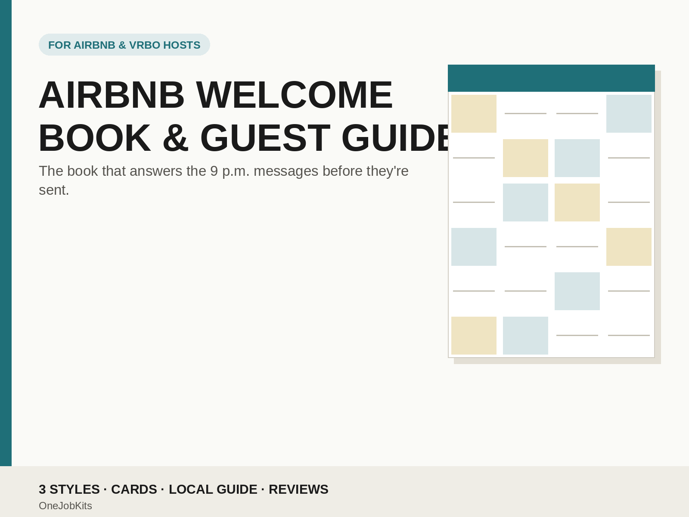

OneJobKits · Kit #36
Airbnb Welcome Book & Guest Guide Kit — airbnb welcome book

The messages arrive at the worst times: the Wi-Fi password at midnight, the parking question during dinner, the check-out time asked on the last morning by guests who never scrolled back through your listing. A good airbnb welcome book answers those questions before they are sent — on paper, in the home, where the guest actually is. This kit builds that book properly: designed, structured, and written to be skimmed in two minutes and found again in ten seconds.
This page gives you the kit's own starter free, right here: two guest cards from the book. Below it is the full system — the complete welcome book, the stand-alone guest cards, a local guide template that stays honest, and a short setup guide that takes the book from download to coffee table in about ninety minutes. It is a set of templates, not a finished book about your home: every bracketed detail is yours to fill with the real Wi-Fi name, the real door code and the real rules, and the rules in the book must match your listing exactly.
Free download — start with the Welcome Book Starter
The Welcome Book Starter is a 3-page PDF taken from the kit itself. Pages 1 and 2 are two finished guest cards, ready to fill, print at 100%, trim and place: the Wi-Fi card (network and password, placed by the bed, with the line guests understand — photograph this card and the whole stay gets easier) and the kind house-rules card (quiet hours, no parties, no smoking inside, shoes at the door, registered guests only overnight — short rules, warmly written, because those are the ones guests follow). Page 3 shows plainly what the full kit adds. The starter is free here, on this page — there is no separate free listing to chase.
Download the free Welcome Book Starter (PDF)
What the starter does not do: it covers the two questions guests ask most, and nothing else. It has no welcome letter, no how-things-work page for the quirks every house has, no kitchen page, no local guide, no check-out list and no what-to-do-if-something-goes-wrong page. The full system below is the whole book — plus the cards, the guide and the setup route that keep it current.
What's inside the full system
- Welcome Book — Coastal style (PDF, 14 pages) — cover · welcome letter · the essentials on one page (Wi-Fi, codes, parking, quiet hours, emergencies) · getting in & settled · how things work · the kind house rules · kitchen & supplies · the neighbourhood · eat & drink · do & see · the short check-out list · if something goes wrong · reviews & coming back · and a blank host page for the things that change
- Coastal PNG Page Pack (ZIP, 14 pages at 150 DPI) — every page of the Coastal book as an image for Canva, with your text placed over the bracketed areas; the print-ready PDF stays the master copy
- Guest Cards Pack (PDF, 7 pages) — a cover page plus six cards, each on its own page to print, trim and place where the guest needs it: Wi-Fi · kind house rules · check-in steps · check-out list · emergency & help · review request
- Local Guide Template (PDF, 8 pages) — eat, groceries, do & see, rainy day & kids, free & wonderful plus the honest skip, and getting around — with the 10 rules that keep it true printed on its first page, starting with: one line per place, and if you cannot say why you love it, it does not belong on the list
- Host Setup Guide (PDF, 2 pages) — the 90-minute route from download to coffee table, the Canva route, print specifications, and the two-arrivals rule for keeping the book current
- Pro ($49) adds: the welcome book in Modern and Cottage styles (14 pages each, each with its own PNG page pack), the Direct-Booking Pages (6 pages: pitch, house, proof, price logic, FAQ, book-it block) and the Review Funnel (2 pages: the five touchpoints, the ask script, platform-clean rules, a worked week)
A filled example — so you can see the finished thing
The example below is built from the Coastal book's own structure, filled for a fictional property — Sea Holly Cottage, an invented two-bedroom cottage. Sea Holly does not exist; what the table demonstrates is what the finished essentials page and its companion pages look like once a real host fills the brackets with real details:
| From the Coastal book | What is filled in (sample — fictional) |
|---|---|
| Cover + welcome letter | “Welcome to Sea Holly Cottage” — a short letter in the hosts' names, one honest sentence about the street, and a note that the house's quirks are written down where they matter, so nothing surprises a guest at midnight |
| The essentials, on one page | Wi-Fi network: SeaHolly_Guest · Wi-Fi password written big, because guests photograph this page · Check-in from 3:00 PM, key-box code given on arrival day · Check-out by 11:00 AM · Parking: one space on the drive, second car on the street · Quiet hours 10 PM – 8 AM · Emergencies: host mobile first, then the local numbers listed |
| How things work + kind house rules | The heating quirk (the hallway thermostat runs the whole house), the washing machine's one trick, and the short kind rules — no parties, no smoking inside, shoes off at the door, registered guests only overnight — worded exactly as they appear in the fictional listing |
| The short check-out list | Five lines only: dishes washed or dishwasher running, towels in the bath, lights off, windows shut, keys back in the box — the list a guest can actually finish with a suitcase in hand |
| Local guide, one honest line | One sample entry written the kit's way — what the place is, why this host loves it, how many minutes away — plus the “honest skip”: the famous spot the fictional host steers friends away from, which is what makes the rest of the list believable |
That is the finished thing: one page a tired traveller can photograph, rules that read kindly because they are short, and a guide a guest trusts because it tells the truth — including about what to skip.
Who it is for
Airbnb and Vrbo hosts — single-property hosts who are tired of answering the same questions, and growing hosts who need every property's book to look and read the same way. It suits hosts who will spend one focused session filling in real details and printing properly, and who want the guest-facing side of the stay to feel considered rather than improvised in a notes app.
Who it is not for
Anyone who wants a finished book about their home without filling anything in — the brackets are the work, and a template with brackets left in helps no guest. It is also not legal, tax or safety advice, not a substitute for your platform's own requirements, and not a back-office profit system: guests are its readers, not your accounts.
Questions buyers ask
- Is this only for Airbnb, or does it work for other platforms and direct bookings?
- The book itself is platform-neutral: it is a guest book for a home, filled with your details, so the same Coastal book serves Airbnb guests, Vrbo guests and guests who booked direct — the kit was built for Airbnb and Vrbo hosts. What changes by channel is the machinery around it: Pro's Direct-Booking Pages are written for your own booking page, and the Review Funnel's ask script follows platform-clean rules wherever the review lives.
- How do I edit the book — do I need Canva?
- No. You can fill the brackets in the PDF with any PDF editor, or print and write — the setup guide treats both as fine. If you prefer Canva, every book ships with a PNG page pack: upload the page images (150 DPI) to Canva as a presentation and place your text over the bracketed areas. One rule from the guide: the print-ready PDF remains the master — if the two ever disagree, the PDF is right.
- What is the difference between Base and Pro?
- Base ($29) is one complete style — the Coastal welcome book (14 pages) with its PNG page pack — plus the Guest Cards Pack, the Local Guide Template and the Host Setup Guide. Pro ($49) adds the same 14-page book in two more styles, Modern and Cottage, each with its own PNG page pack, so multi-property hosts can match book to house; it also adds the Direct-Booking Pages (6 pages) and the Review Funnel (2 pages). The words and structure are the same across styles; only the design changes.
- What do the guest cards and the local guide add beyond the book?
- Placement and trust. The six guest cards put one answer where the guest is standing — the Wi-Fi card by the bed, the check-out list where packing happens, the review request by the door — instead of asking guests to find page 9. The Local Guide Template is your real list, not a copied one: eight pages covering eat, groceries, do & see, rainy days and kids, free things and the honest skip, built on 10 rules that keep it true, starting with one line per place and a reason you personally love it.
- How long does setup take, and how do I keep the book current?
- The Host Setup Guide lays out a 90-minute route: pick one style and use it everywhere, fill the brackets, walk the house with the book checking that every claim on the how-things-work page is true at arm's reach, fill the local guide from your own list, then print — the book on the heaviest paper your printer takes, the cards on card stock. Keeping it current follows the guide's two-arrivals rule, and every book ends with a blank host page on purpose, for the things that change between printings.
- How do the review scripts stay within platform rules?
- By asking honestly and asking everyone the same way. The Review Funnel works through five touchpoints — booking confirmed, check-in evening, mid-stay, checkout morning and the evening of checkout — and one ask script that thanks the guest, links the review, and invites anything that fell short to come back as a private reply instead. The rules printed in the kit: never pay for reviews, never gate the ask by sentiment (no “only if you loved it”), and ask for permission before quoting a guest anywhere.
- What does the free starter cover, and what does the full kit add?
- The free Welcome Book Starter is 3 pages: the Wi-Fi card and the kind house-rules card — the two cards that save the most messages — plus a page showing what the full kit adds. The full kit is the complete 14-page welcome book (essentials, how things work, kitchen, neighbourhood, check-out, emergencies, and more), the full six-card guest pack, the 8-page local guide template and the setup guide — and in Pro, two more book styles, the direct-booking pages and the review funnel.
Prices
Base: $29 · Pro (adds the Modern and Cottage styles, direct-booking pages and the review funnel): $49 — one-time payment, digital download. No subscription; the files are yours.
Can't find the kit you need?
We build it. Ask us — first asker gets it at half the shelf price. Tell us the job at onejobkits.com and we will build the kit for it.
Related kits
Please know: these are templates only — the host remains responsible for local rules, taxes, safety duties and platform terms, and this kit is not legal, tax or safety advice. Fill every bracket with your real details, and make sure the house rules in the book match your listing exactly; review scripts follow platform rules — ask everyone the same way, and never pay for or gate reviews. All example data is fictional (Sea Holly Cottage is invented, and the example above says so).